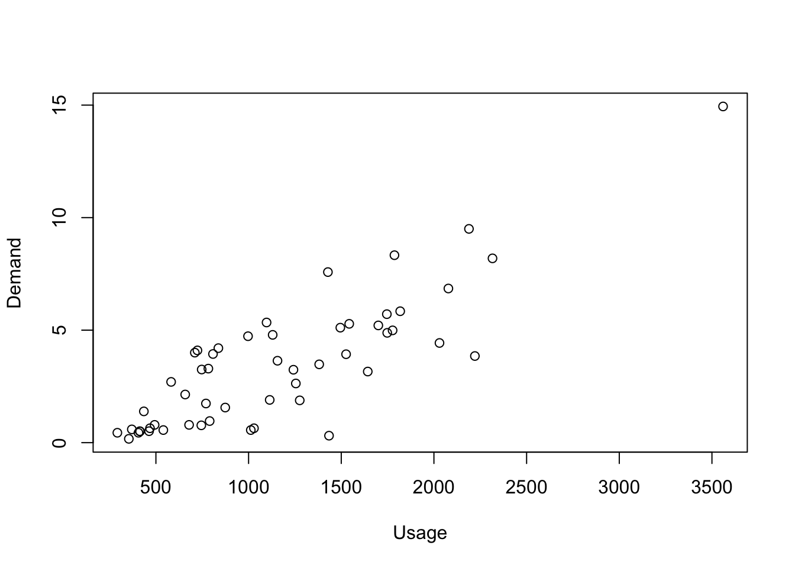
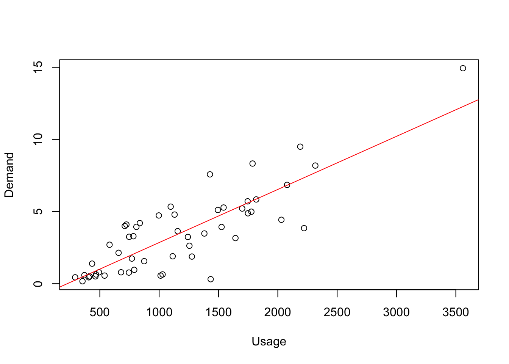
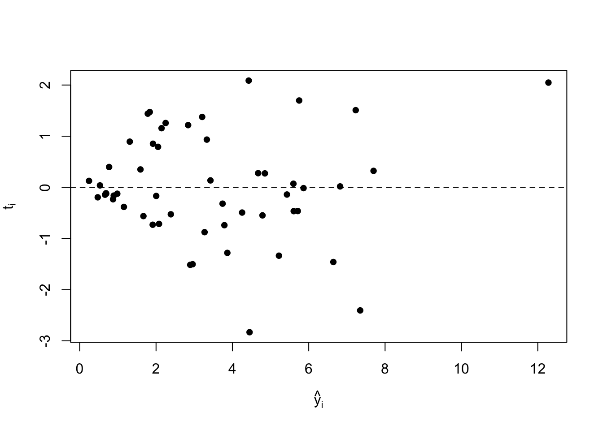
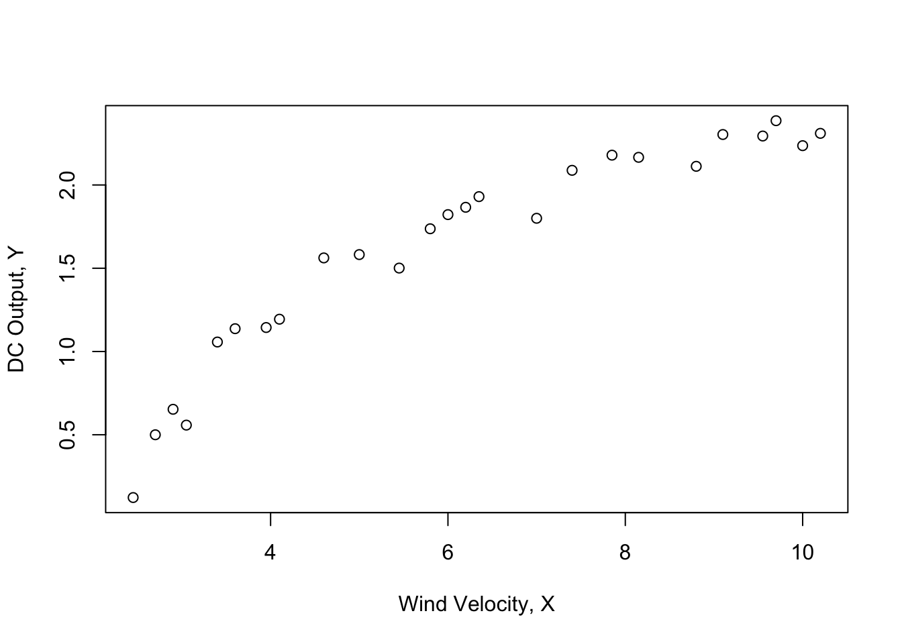
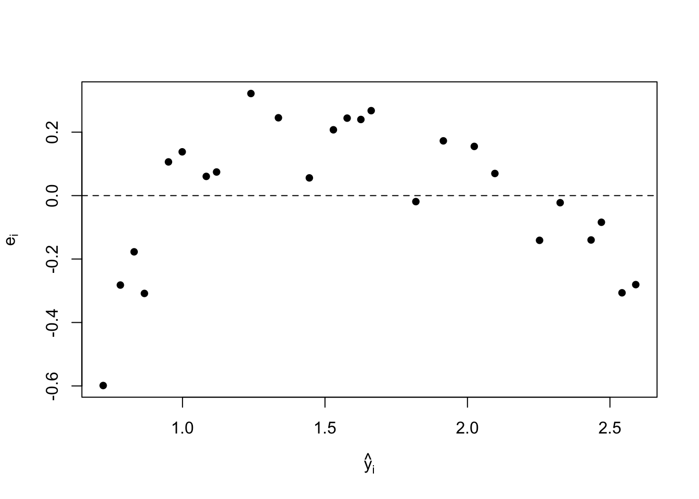
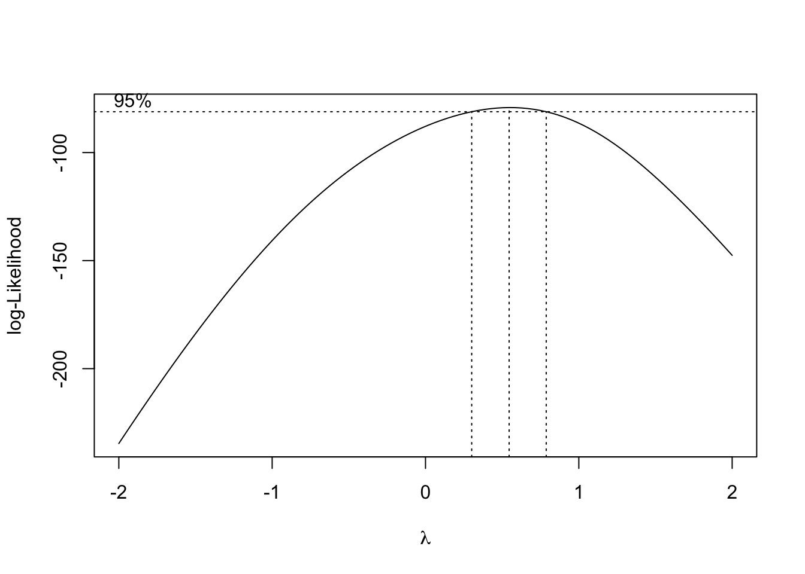

library(latex2exp)
library(magrittr)
library(dplyr)
library(MASS) This post covers examples from Chapter 5 of Introduction to Linear Regression Analysis.

1. Set Up
For this analysis I will be using four packages:
magrittr: for piping (%>%)
dplyr: to arrange the data
MASS: to use the boxcox function
latex2exp: to put latex on graphs
2. Example 5.1: The Electric Utility Data
An electric utility company is interested in developing a model relating peak-hour demand \((y)\) to total energy usage during the month \((x)\).
To start lets look at the data.
ex51 <- utils::read.csv("data/ex5-1.csv")
ex51 X Customer x_.kWh. y_.kW.
1 1 1 679 0.79
2 2 2 292 0.44
3 3 3 1012 0.56
4 4 4 493 0.79
5 5 5 582 2.70
6 6 6 1156 3.64
7 7 7 997 4.73
8 8 8 2189 9.50
9 9 9 1097 5.34
10 10 10 2078 6.85
11 11 11 1818 5.84
12 12 12 1700 5.21
13 13 13 747 3.25
14 14 14 2030 4.43
15 15 15 1643 3.16
16 16 16 414 0.50
17 17 17 354 0.17
18 18 18 1276 1.88
19 19 19 745 0.77
20 20 20 435 1.39
21 21 21 540 0.56
22 22 22 874 1.56
23 23 23 1543 5.28
24 24 24 1029 0.64
25 25 25 710 4.00
26 26 26 1434 0.31
27 27 27 837 4.20
28 28 28 1748 4.88
29 29 29 1381 3.48
30 30 30 1428 7.58
31 31 31 1255 2.63
32 32 32 1777 4.99
33 33 33 370 0.59
34 34 34 2316 8.19
35 35 35 1130 4.79
36 36 36 463 0.51
37 37 37 770 1.74
38 38 38 724 4.10
39 39 39 808 3.94
40 40 40 790 0.96
41 41 41 783 3.29
42 42 42 406 0.44
43 43 43 1242 3.24
44 44 44 658 2.14
45 45 45 1746 5.71
46 46 46 468 0.64
47 47 47 1114 1.90
48 48 48 413 0.51
49 49 49 1787 8.33
50 50 50 3560 14.94
51 51 51 1495 5.11
52 52 52 2221 3.85
53 53 53 1526 3.93Right away we can see that for each customer there is a value x_.kWH for Kilowatt hour which corresponds to energy usage during the month, and y_.kW for kilowatt which would then be peak-hour demand. The plot of this is shown below.
base::plot(ex51$x_.kWh.,
ex51$y_.kW.,
xlab = "Usage",
ylab = "Demand")
As a starting point a simple linear regression model is assumed. Lets look at the summary to get an equation for the least-squares fit, and analyze variability.
lm51 <- stats::lm(ex51$y_.kW. ~ ex51$x_.kWh., data = ex51)
summary(lm51)
Call:
stats::lm(formula = ex51$y_.kW. ~ ex51$x_.kWh., data = ex51)
Residuals:
Min 1Q Median 3Q Max
-4.1399 -0.8275 -0.1934 1.2376 3.1522
Coefficients:
Estimate Std. Error t value Pr(>|t|)
(Intercept) -0.8313037 0.4416121 -1.882 0.0655 .
ex51$x_.kWh. 0.0036828 0.0003339 11.030 4.11e-15 ***
---
Signif. codes: 0 '***' 0.001 '**' 0.01 '*' 0.05 '.' 0.1 ' ' 1
Residual standard error: 1.577 on 51 degrees of freedom
Multiple R-squared: 0.7046, Adjusted R-squared: 0.6988
F-statistic: 121.7 on 1 and 51 DF, p-value: 4.106e-15From our summary our we can extrapolate our least-squares fit is: \(\hat y=-0.83130+0.00368x\)
For this model \(R^2=0.7046\); that is about 70% of the variability in demand is accounted for by the straight-line fit to energy usage. The summary statistics do not reveal any obvious problems with this model.
Below this model is plotted with a red line.
base::plot(ex51$x_.kWh.,
ex51$y_.kW.,
xlab = "Usage",
ylab = "Demand")
graphics::abline(lm51, col = "red")
From visual inspection we can see the points on the far left side of the graph are much closer to the best fit line than those in the middle and right side of the graph. We might want to apply a transformation to this model, so lets look at the Studentized Residual also known as r student.
base::plot(stats::fitted(lm51),
stats::rstudent(lm51),
ylab=latex2exp::TeX(r'($t_i$)'),
xlab=latex2exp::TeX(r'($\hat{y}_i$)'),
pch = 16);graphics::abline(0, 0,lty = 2)
From this graph we can see that the residuals form an outward-opening funnel, indicating that the error variance is increasing as energy consumption increases. A transformation may be helpful in correcting this model inadequacy. To select the form of the transformation, note that the response variable y may be viewed as a “count” of the number of kilowatts used by a customer during a particular hour. The simplest probabilistic model for count data is the Poisson distribution. This suggests regressing \(y^*=\sqrt{y}\) on x as a variance-stabilizing transformation.
ex51$ystar <- base::sqrt(ex51$y_.kW.)
lm51T <- stats::lm(ex51$ystar ~ ex51$x_.kWh., data = ex51)
base::summary(lm51T)
Call:
stats::lm(formula = ex51$ystar ~ ex51$x_.kWh., data = ex51)
Residuals:
Min 1Q Median 3Q Max
-1.39185 -0.30576 -0.03875 0.25378 0.81027
Coefficients:
Estimate Std. Error t value Pr(>|t|)
(Intercept) 5.822e-01 1.299e-01 4.481 4.22e-05 ***
ex51$x_.kWh. 9.529e-04 9.824e-05 9.699 3.61e-13 ***
---
Signif. codes: 0 '***' 0.001 '**' 0.01 '*' 0.05 '.' 0.1 ' ' 1
Residual standard error: 0.464 on 51 degrees of freedom
Multiple R-squared: 0.6485, Adjusted R-squared: 0.6416
F-statistic: 94.08 on 1 and 51 DF, p-value: 3.614e-13The resulting least-squares fit is: \(\hat y^*=0.5822+0.0009529x\)
base::plot(stats::fitted(lm51T),
stats::rstudent(lm51T),
ylab=latex2exp::TeX(r'($t_i$)'),
xlab=latex2exp::TeX(r'($\hat{y}^*_i$)'),
pch = 16);graphics::abline(0, 0,lty = 2)
The impression from examining this plot is that the variance is stable; consequently, we conclude that the transformed model is adequate.
Note that there is one suspiciously large residual (customer 26) and one customer whose energy usage is somewhat large (customer 50). The effect of these two points on the fit should be studied further before the model is released for use.
3. Example 5.2: The Windmill Data
A research engineer is investigating the use of a windmill to generate electricity. He has collected data on the DC Output from his windmill and the corresponding wind velocity.
ex52 <- utils::read.csv("data/ex5-2.csv")
utils::head(ex52) X ObservationNumber_i WindVelocity_xi_mph DCOutput_yi
1 1 1 5.0 1.582
2 2 2 6.0 1.822
3 3 3 3.4 1.057
4 4 4 2.7 0.500
5 5 5 10.0 2.236
6 6 6 9.7 2.386The data is plotted below.
base::plot(ex52$WindVelocity_xi_mph,
ex52$DCOutput_yi,
xlab = "Wind Velocity, X",
ylab = "DC Output, Y")
Inspection of the scatter diagram indicates that the relationship between DC output \((y)\) and wind velocity \((x)\) may be nonlinear. However, we initially fit a straight-line model to the data, and look at the summary statistics.
lm52 <- stats::lm(ex52$DCOutput_yi ~ ex52$WindVelocity_xi_mph, data = ex52)
base::summary(lm52)
Call:
stats::lm(formula = ex52$DCOutput_yi ~ ex52$WindVelocity_xi_mph,
data = ex52)
Residuals:
Min 1Q Median 3Q Max
-0.59869 -0.14099 0.06059 0.17262 0.32184
Coefficients:
Estimate Std. Error t value Pr(>|t|)
(Intercept) 0.13088 0.12599 1.039 0.31
ex52$WindVelocity_xi_mph 0.24115 0.01905 12.659 7.55e-12 ***
---
Signif. codes: 0 '***' 0.001 '**' 0.01 '*' 0.05 '.' 0.1 ' ' 1
Residual standard error: 0.2361 on 23 degrees of freedom
Multiple R-squared: 0.8745, Adjusted R-squared: 0.869
F-statistic: 160.3 on 1 and 23 DF, p-value: 7.546e-12The summary statistics for this model are \(R^2=0.8745\), and \(F_0=160.26\) (the P-value is <0.0001), and he regression model is: \(\hat y=0.1309+0.2411x\), shown in red below.
base::plot(ex52$WindVelocity_xi_mph,
ex52$DCOutput_yi,
xlab = "Wind Velocity, x",
ylab = "DC Output, Y")
graphics::abline(lm52, col = "red")
Below we can extract the fitted and residual values from our linear model, and then arrange them in order of increasing wind speed.
ex52$fitted <- stats::fitted(lm52)
ex52$resid <- stats::resid(lm52)
ex52 %>% dplyr::arrange(-dplyr::desc(ex52$WindVelocity_xi_mph)) X ObservationNumber_i WindVelocity_xi_mph DCOutput_yi fitted resid
1 25 25 2.45 0.123 0.7216899 -0.59868986
2 4 4 2.70 0.500 0.7819771 -0.28197708
3 11 11 2.90 0.653 0.8302069 -0.17720685
4 8 8 3.05 0.558 0.8663792 -0.30837918
5 3 3 3.40 1.057 0.9507813 0.10621871
6 16 16 3.60 1.137 0.9990111 0.13798894
7 24 24 3.95 1.144 1.0834132 0.06058683
8 23 23 4.10 1.194 1.1195855 0.07441450
9 13 13 4.60 1.562 1.2401599 0.32184007
10 1 1 5.00 1.582 1.3366195 0.24538052
11 20 20 5.45 1.501 1.4451365 0.05586353
12 14 14 5.80 1.737 1.5295386 0.20746142
13 2 2 6.00 1.822 1.5777683 0.24423165
14 10 10 6.20 1.866 1.6259981 0.24000188
15 12 12 6.35 1.930 1.6621705 0.26782955
16 19 19 7.00 1.800 1.8189172 -0.01891722
17 15 15 7.40 2.088 1.9153768 0.17262323
18 17 17 7.85 2.179 2.0238938 0.15510624
19 9 9 8.15 2.166 2.0962384 0.06976158
20 18 18 8.80 2.112 2.2529852 -0.14098518
21 21 21 9.10 2.303 2.3253298 -0.02232985
22 7 7 9.55 2.294 2.4338468 -0.13984684
23 6 6 9.70 2.386 2.4700192 -0.08401917
24 5 5 10.00 2.236 2.5423638 -0.30636383
25 22 22 10.20 2.310 2.5905936 -0.28059360The residuals show a distinct pattern, that is, they move systematically from negative to positive and back to negative again as wind speed increases.
base::plot(stats::fitted(lm52),
stats::resid(lm52),
ylab=TeX(r'($e_i$)'),
xlab=TeX(r'($\hat{y}_i$)'),
pch = 16);graphics::abline(0, 0,lty = 2)
This residual plot indicates model inadequacy and implies that the linear relationship has not captured all of the information in the wind speed variable. Note that the curvature was apparent in the earlier scatter diagram, but is greatly amplified in the residual plot
Clearly some other model form must be considered. We might initially consider using a quadratic model such as: \(y=\beta_0+\beta_1x+\beta_2x^2+\epsilon\) to account for the curvature. However since the quadratic model will eventually bend downward as wind speed increases, it would not be appropriate for these data. A more reasonable model for windmill data that incorporates an upper asymptote would be: \(y=\beta_0+\beta_1(\frac{1}{x})+\epsilon\).
ex52$xstar <- 1/ex52$WindVelocity_xi_mph
lm52T <- stats::lm(ex52$DCOutput_yi ~ ex52$xstar, data = ex52)
base::summary(lm52T)
Call:
stats::lm(formula = ex52$DCOutput_yi ~ ex52$xstar, data = ex52)
Residuals:
Min 1Q Median 3Q Max
-0.20547 -0.04940 0.01100 0.08352 0.12204
Coefficients:
Estimate Std. Error t value Pr(>|t|)
(Intercept) 2.9789 0.0449 66.34 <2e-16 ***
ex52$xstar -6.9345 0.2064 -33.59 <2e-16 ***
---
Signif. codes: 0 '***' 0.001 '**' 0.01 '*' 0.05 '.' 0.1 ' ' 1
Residual standard error: 0.09417 on 23 degrees of freedom
Multiple R-squared: 0.98, Adjusted R-squared: 0.9792
F-statistic: 1128 on 1 and 23 DF, p-value: < 2.2e-16The fitted regression model is \(\hat y=2.9789-6.9345x'\)
The summary statistics for this model are \(R^2=0.98\), and \(F_0=1128\) (the p value is <0.0001).
base::plot(stats::fitted(lm52T),
stats::rstudent(lm52T),
ylab=TeX(r'($t_i$)'),
xlab=TeX(r'($\hat{y}_i$)'),
pch = 16);graphics::abline(0, 0,lty = 2)
This plot does not reveal any serious problems.
4. Example 5.3: The Electic Utility Data
We use the Box-Cox procedure to select a variance-stabilizing transformation. The values of \(SS_{Res}(\lambda)\) for various values are shown in the table.
boxcoxResult = MASS::boxcox(ex51$y_.kW. ~ ex51$x_.kWh., data = ex51, lambda = seq(-2,2,0.125))
The Box-Cox graph shows most of the data is below the 95% confidence interval.
lambda <- boxcoxResult$x[which.max(boxcoxResult$y)]
lambda[1] 0.5454545Where \(\lambda\approx\) 0.5454545 could be used as an appropriate exponent to use to transform the data into a “normal shape.”